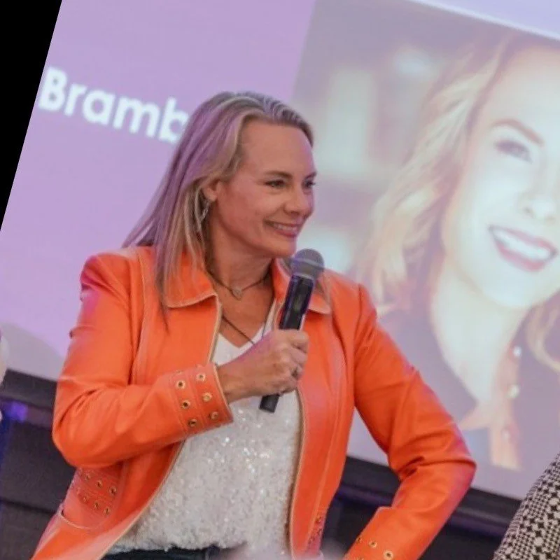
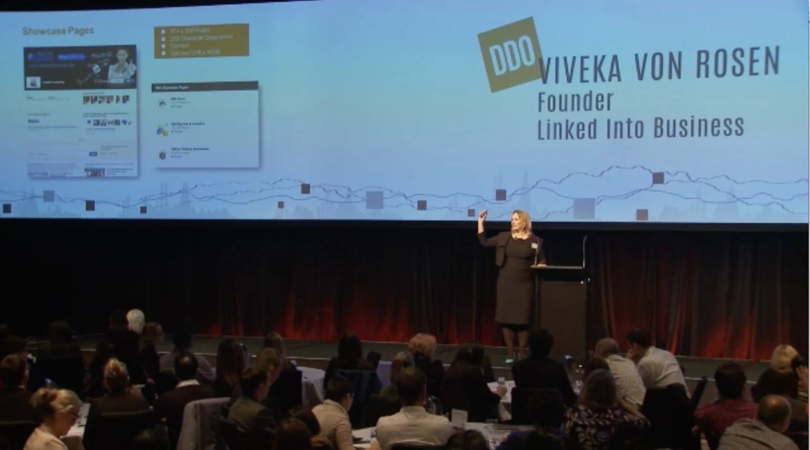

Viveka von Rosen speaks at the intersection of AI, LinkedIn, and Visibility Infrastructure — giving audiences a structural diagnosis, a working framework, and a clear path forward in a market that rewards architecture over accomplishment.
Forbes · Fast Company · Money Magazine · LinkedIn Learning · Inbound · NATO / OTAN · SHRM · Social Media Marketing World · Content Marketing World · National Speakers Association · Oracle · Amazon · MarketingProfs B2B
Most accomplished women are not invisible because they lack expertise. They are invisible because the systems that made them successful — depth over volume, substance over noise, results over rhetoric — are exactly the systems that make them invisible in a market that rewards architecture over accomplishment.
Viveka von Rosen is a LinkedIn Expert and AI Strategist for Women Founders. She is the bestselling author of LinkedIn Marketing: An Hour a Day, co-founder of Vengreso (which became one of the world's largest digital sales transformation companies), and the creator of the Visibility Infrastructure OS — a proprietary system that turns decades of expertise into searchable, sellable authority.
She does not give motivational keynotes. She delivers structural ones — diagnostic frameworks her audiences can apply the Monday morning after the event.

Viveka has built two businesses, written multiple books, and worked one-on-one with hundreds of expert women. She speaks from what works at the room temperature of a real business — not what trends on a thought-leader feed.
Audiences leave with named, teachable frameworks they can hand to their team or apply to their own business — not slogans. The Authority Gap, the Visibility Architecture Stack, the Authority Engine.
She's been using AI in a real authority business for two years and has the receipts. No "ChatGPT changed my life" performance. No doom. Just specific, working integrations of AI into the daily mechanics of an expertise-based business.
Viveka shows up early and stays late. She studies the audience, customizes the talk, and treats the event as if it were her own. Phil Mershon of Social Media Marketing World has called her "the consummate professional."
Each keynote is built on a named, proprietary framework, customizable to your audience — corporate, women's leadership, association, or entrepreneurial — and delivers a structural takeaway, not a pep talk.
Why the most qualified expert in the room rarely gets the stage — and how to architect the authority that changes that. Drawing on her work with fractional CMOs, neuroscientists, rocket scientists, real-estate trainers, and authors, Viveka introduces The Authority Gap Model™ — a four-gap diagnostic that maps the structural breakdowns between where an established expert sits and where her credibility should already be working for her. The audience leaves with a precise diagnosis and a concrete roadmap — without performing online, starting over, or becoming someone they don't recognize.
Audience leaves with:
Best fit: women's leadership conferences · professional associations · executive women's groups · founder & consulting communities
Why the most disciplined experts are not the most visible — and what they're building that everyone else is just performing. Visibility is not a behavior; it's a system. This keynote introduces The Visibility Architecture Stack™ — a three-layer model (Positioning, Infrastructure, Amplification — in that order, every time) that explains why most established experts post more and get less. Most people go straight to Layer 3 — content, podcasts, speaking, PR — without building Layers 1 and 2, and the result is attention with nowhere to land.
Audience leaves with:
Best fit: founder & entrepreneur conferences · coach / consultant / advisor audiences · personal branding events · author & speaker associations
The established experts most likely to be overtaken by AI are not the ones using it wrong — they're the ones waiting until they understand it better. AI is not replacing twenty-year expertise; it's amplifying it. This keynote introduces The Authority Engine™ — Viveka's system for using AI not as a content generator but as a strategic extension of an expert's voice, judgment, and intellectual property. It's not a tools talk. It's a positioning talk for a moment when most senior professionals are quietly afraid they're about to be made redundant — and Viveka names what neither side will say out loud.
Audience leaves with:
Best fit: corporate leadership events · future-of-work & innovation conferences · professional services firms · senior women in technology programs


For audiences of senior professionals, leaders, and women executives navigating an AI-powered market where titles carry less weight and visible authority carries more.
For audiences of coaches, consultants, advisors, authors, and speakers who have already built real expertise and need the architecture to make it visible and sellable.
Viveka makes complex ideas easier to understand by burying the structural insight inside the practical advice. She leads with the tactical problem the audience recognizes, offers a concrete move, then names the architectural reason it works. She doesn't perform expertise — she demonstrates it through specificity, naming the exact client situation, the exact gap, the exact next move. She comes prepared, studies the audience, adapts the talk, and does not do the fly-in, drop-the-keynote, fly-out routine. She stays.
"Audiences leave with more than inspiration. They leave with language, strategy, and a clearer sense of what to do next."
"Viveka is an expert I've followed on LinkedIn for years, and I was happy to have her as a speaker for NATO's Social Media Forum for International Organisations. Her enthusiasm and willingness to share impressed all participants."
— Franky Saegerman, Head of Digital Insights & Social Media, NATO
"Viveka is an exceptionally knowledgeable LinkedIn and social media trainer. She chunks down everything you need to optimize and succeed. She will help you get measurable results, no question."
— Mari Smith, Premier Social Media Thought Leader & Speaker
"Viveka spoke numerous times for us at Social Media Marketing World. She is the consummate professional — always prepared, eager to adapt, focused on serving the community. She's like an extension of your team."
— Phil Mershon, Director of Experience, Social Media Examiner
"Viveka has the ability to take a complex idea and simplify it for immediate implementation. She is incredible."
— Neen James, CSP, International Keynote Speaker
"I had Viveka train alumni of the Women in Sales Leadership Forum, and the kudos for her knowledge and personalized efforts haven't stopped. A true expert with the passion and professionalism to back up the title."
— Gina Stracuzzi, Director, Women in Sales Leadership Forum
"I thought I knew LinkedIn pretty well, but I couldn't keep up with all the amazing ideas Viveka shared. I took pages of notes. If you're looking for a keynote, breakout, or workshop, I can't say enough about her."
— Rich Brooks, Founder, Agents of Change Digital Marketing Conference
Social Media Examiner · Digital Day Out Auckland · American Marketing Association · Amazon · Oracle · Juniper · Proofpoint · W.L. Gore · PACE · SHRM · National Speakers Association · Clemson · University of Denver · University of Colorado · University of Northern Colorado
Viveka von Rosen is a LinkedIn Expert and AI Strategist for Women Founders. A 21-year LinkedIn practitioner, bestselling author of LinkedIn Marketing: An Hour a Day, LinkedIn Learning author, and co-founder of Vengreso, she speaks on AI, authority, and Visibility Infrastructure for expert women. Known for naming what most experts have felt but never seen named, she gives audiences structural frameworks they can use the Monday morning after the event. Her work has been featured in Forbes, Fast Company, Inc., and Entrepreneur, and she has spoken for Inbound, NATO/OTAN, SHRM, Oracle, Amazon, and the National Speakers Association.
Viveka von Rosen is a LinkedIn Expert and AI Strategist for Women Founders, working with coaches, consultants, trainers, advisors, authors, and speakers who've built real expertise and want the visibility, voice, and systems to grow it. On LinkedIn for 21 years, she founded Linked Into Business in 2006 and co-founded Vengreso in 2017 — one of the world's largest digital sales transformation companies — before walking away to build a practice grounded in her Visibility Infrastructure OS.
She is the bestselling author of LinkedIn Marketing: An Hour a Day, 101 Ways to Rock LinkedIn, and more, and a LinkedIn Learning author — chosen by LinkedIn itself to teach the platform she's studied for two decades. She lives in Loveland, Colorado, runs the Women's Technology Integration Collaborative, and is the architect of the Authority Gap Model™, the Visibility Architecture Stack™, and the Authority Engine™.
From Social Media Marketing World to NATO/OTAN, Auckland to Anchorage.
For event planners and bureaus: send a date, an audience, and a stage. Viveka will read the room, customize the talk, and deliver a keynote your audience will reference for months.